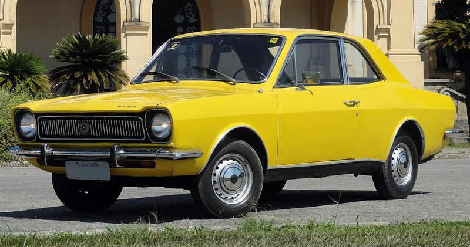
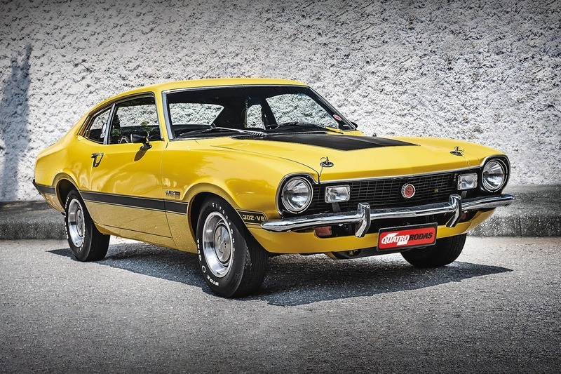
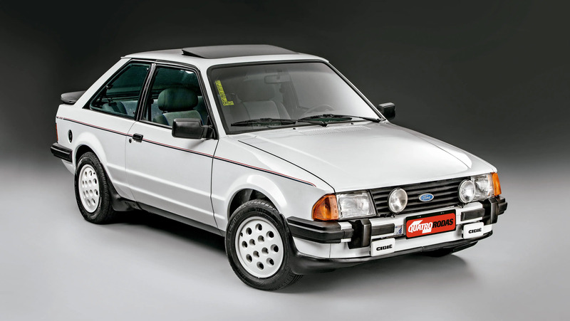
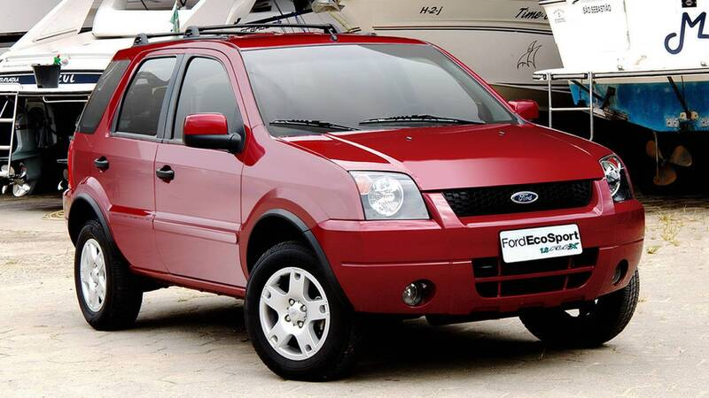
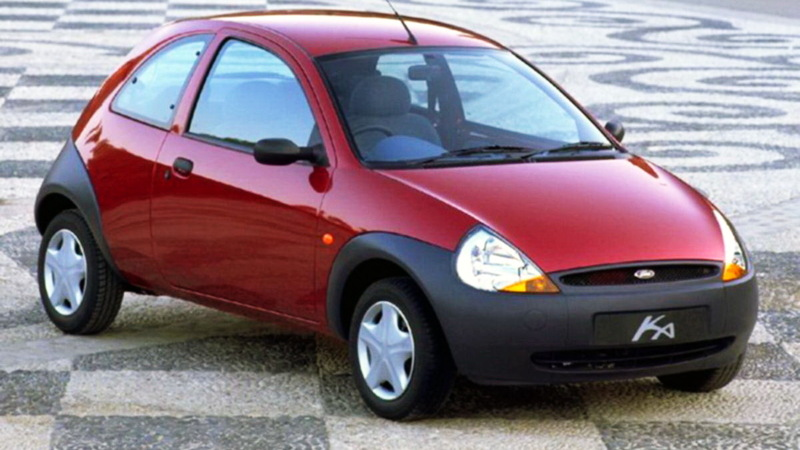

A história da Ford no Brasil começou oficialmente em 24 de abril de 1919. Na época, com um investimento inicial de 25 mil dólares, a empresa instalou-se em um armazém na Rua Florêncio de Abreu, em São Paulo. Ali, começava a montagem do lendário Modelo T e do caminhão Modelo TT, utilizando componentes importados dos Estados Unidos.
Nossa história
Pioneirismo e Expansão (1919 - 1960)
O sucesso foi imediato. Em 1921, a Ford inaugurou uma fábrica própria na Rua Solon, no bairro do Bom Retiro. O crescimento da frota brasileira exigia mais, e em 1953, a Ford inaugurou a histórica fábrica do Ipiranga. Foi neste período que o Brasil viu o nascimento do primeiro caminhão Ford brasileiro (1957) e, logo depois, o luxuoso Galaxie 500 (1967), que elevou o padrão de conforto no país.
A Era de Ouro e os Ícones (1960 - 1990)
Nas décadas seguintes, a Ford consolidou-se no coração dos brasileiros com modelos que se tornaram membros da família:
- Corcel

: Lançado em 1968, revolucionou pela economia e conforto. - Maverick

: Chegou em 1973 para trazer o estilo "Muscle Car" americano ao Brasil. - Escort

: Em 1983, trouxe tecnologia europeia e a icônica versão esportiva XR3.
Autolatina: Entre 1987 e 1996, a Ford e a Volkswagen formaram uma aliança estratégic (Autolatina), compartilhando plataformas e motores, resultando em carros como o Versailles e o Verona.
Inovação e Modernização (2000 - 2020)
Com a inauguração da fábrica de Camaçari (Bahia) em 2001, a Ford revolucionou os métodos de produção. Desta fábrica saíram dois dos maiores sucessos modernos:
- EcoSport

: O carro que criou o segmento de SUVs compactos no Brasil e no mundo. - Ford Ka

: Que evoluiu de um subcompacto urbano para uma linha completa de hatch e sedã.
Reinventando um conceito (atual)
Em 2021, a Ford anunciou uma mudança drástica e estratégica em sua operação global: o encerramento da produção fabril no Brasil para se tornar uma empresa importadora de produtos premium e de alto valor tecnológico. Hoje, a Ford Brasil atua como um hub de engenharia global (através de seu Centro de Desenvolvimento na Bahia) e foca em oferecer o que há de melhor em seu portfólio mundial, como a família Ranger, o Mustang, os SUVs Bronco Sport e Territory, e a inovadora F-150.
Um Século de Inovação e Movimento
De 1919 aos dias atuais, a Ford evoluiu de montadora de componentes para um ícone de tecnologia, mantendo-se fiel ao seu lema de prover mobilidade e inovação para o povo brasileiro.